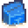
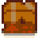
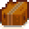

Supply Crate
| Supply Crate | |
   |
|
| Information | |
| Source | Beach Farm |
| Sell Price | Cannot be sold |
- This article is about the Beach farm object. For the object in the mines, see The Mines#Crates and Barrels.
Supply Crates sometimes wash up on the shore of the Beach Farm. The contents of the crate are random and mainly depend on how many times the Farmhouse has been upgraded.
There are three types of crates that can appear on shore. Each type of crate is equally likely to appear. The chances of receiving certain items are not affected by what type of crate spawns.
Contents
The following contents can appear depending on how many times the Farmhouse has been upgraded.[1] Each item in each list is equally likely to appear. The only exceptions are below:
- When the farmhouse is not upgraded, Cherry Bomb is twice as likely to be chosen (28.6%) as everything else (14.3%)
- When the farmhouse is upgraded at least two times, Banana Pudding and Mango Sticky Rice are half as likely to be chosen (5.6%) as everything else (11.1%)
Also, after the item is picked, all possible quantities of the item are equally likely. For instance, the chance of getting 3 Mixed Seeds is the same as the chance of getting 4 Mixed Seeds.
No Upgrades
|
One Upgrade
|
Two Or Three Upgrades
|
References
- ↑ Drops are determined by Object::performToolAction in the game code.
History
- 1.5: Introduced.
- 1.6: Added Mixed Flower Seeds to drop pool.